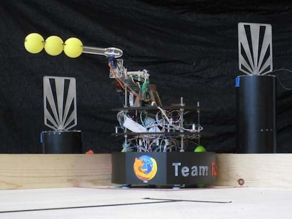

|
|
||
|
OVERVIEW
| HARDWARE
| SOFTWARE
| GALLERY
| THE TEAM
|
||
|
Overview
Arm Positioning Drive Train |

|
For our ME218B Hats Off! project we were assigned to build an autonomous, battery-powered robot that could knock off targets from the top of 6" and 12" columns that were placed outside the playing field. Our robot competed head-to-head against another robot to knock off the most targets in the fastest time.
Specific target numbers were assigned semi-randomly through wireless communication between our robot and the master game computer (Target Commander). In the first round, the Target Commander only assigned targets to each robot on their respective side of the field. In the following rounds, targets on either side of the field could be assigned. |
|
|
Our robot had a double-jointed arm to knock off the hats. It navigated the field with tape sensors and dead-reckoning from the motor encoders.
The embedded video showcases our robot's performance in the championship round. Assigned targets start blinking the same color as the robots' starting square. Our robot begins in the bottom right, performs consistently, and wins! If videos are not enabled on your browser, please follow the link to view the video on Youtube. Youtube link |
|